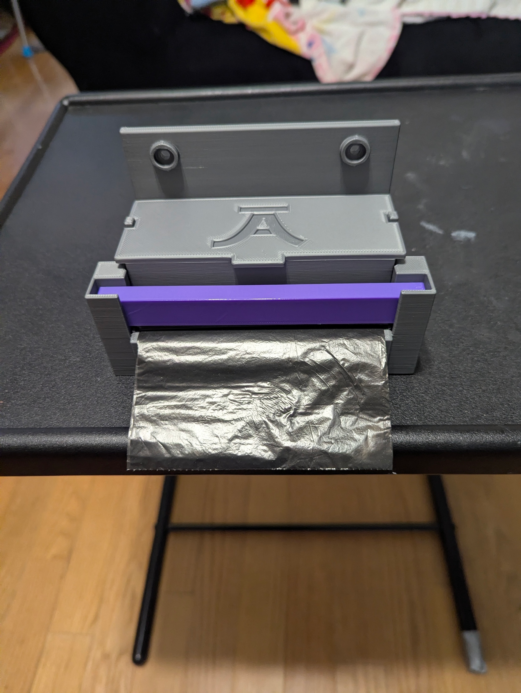

01 / FUNCTIONAL 3D PRINT
A place for the
next bag.
A custom trash bag dispenser designed to keep a roll together and the next bag within reach. The gray housing, purple bar, and JA monogram give a useful everyday piece a personal finish.
The design has evolved through several iterations, with a removable hood and refinements to the spring-bar connection. The latest v6 CAD revision strengthens that connection; its spring action and long-term durability still need physical testing.
TRASH BAG DISPENSER / ITERATIVE DESIGN